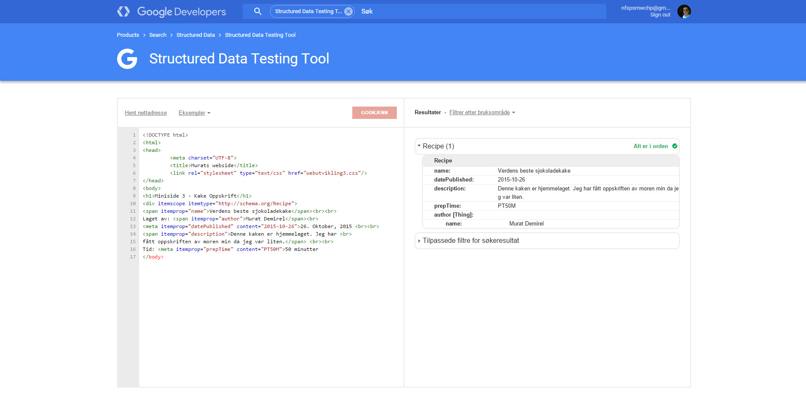
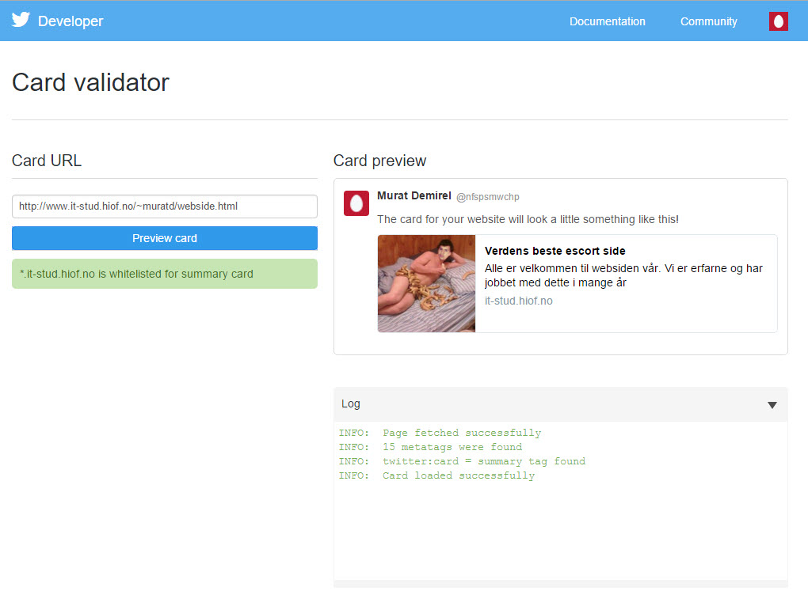

1: Websiden vi har laget for oblig 3/4 er ganske interessang. Den handler om meg og 3
andre medelever som er photoshoppet og skal selge oss selv alt etter hva kunden er
villig til å betale. Kort sagt så er det en escort side(selvfølgelig tull). Bildene
er photoshoppet og siden har en lekker galaxy bakgrunn med lilla farge som hovedtema.
Målsettingen til websiden er å skape en solid webside der man kan handle frem og tilbake
med kundene uten at kunden eller escortene settes i fare. Det skal være en side der
man kan velge produkt (oss i dette tilfelle) og bestille tid med en enkel trykk av en
knapp.
Kundegruppen er kvinner som er myndig (18+) som kanskje ikke har tilgang til en partner.
De har ikke tilgang til en partner og velger derfor å tilfredstille seg selv med våre
escorter som er dyktige fagfolk. Kundegruppen kan også være menn som er myndige (18+)
som ikke klarer å finne seg en partner som kan tilfredstille dem.
Konkurrentene er andre store escort sider. Akkurat i escort bransjen er det en dominerende
konkurrent som er Realescort. Dem ligger øverst på escort søkene som er gjort på Google.
Salgskanal til websiden går som regel over nettsiden eller via telefon, men det er mulig
å kontakte escortene med epost. Websiden har derfor ganske mange salgskanaler. Alt av
informajon om escortene står på websiden.
2: Websiden er ganske oversiktlig og det går lett ann å trykke på de forskjellige knappene uten
noe problem.
Fargene er veldig avslappet og rolig. Perfekt for en side slikt som dette. Fargetemaene består
av lilla, mørkelilla, blå og litt hvit.
Hadde vært fint om den ene knappen fungerte som den skulle, men det gjør den ikke nå.
Siden fungerer utmerket på forskjellige enheter siden den er bygd med tilgjengelighet i
bakhodet.
Sosiale medier er også koblet til websiden som gjør det enkelt for deg å gå til Facebook,
Twitter, Google+ og Youtube for å anbefale din favoritt til andre.
Metadataene er også på plass som gjør det enkelt for nettsiden å kommunisere direkte med
søkemotoren
Selve nettsiden og CSS'en er også validert som er et pluss.
3: Dette kan vi gjøre for å forbedre websiden vår for å få høyere rangering:
Vi kan ha linker som peker mot websiden vår. Dette kan være litt vanskelig
med en side som dette, men samleie er noe folk snakker om så det skal være
mulig å få noen linker mot websiden.
Vi kan også forbedre tittelen vår. Med tittelen så mener jeg tittelen som
ligger i head
Innholdet vårt kan også være litt bedre enn det er akkurat nå. At innholdet
relevant, riktig og spennende gjør at vi automatisk blir prioritert.
4: Første jeg ville gjort er å bytte default tittelen til noe som faktisk har noeforeløpig
betydning. Mange nettsider gjør akkurat slike type feil. De lar tittelen være default
som absolutt ikke er smart på noe som helst måte. Måten man gjør det på er å gå på
head seksjonen i websiden, deretter skriver du noe fornuftig i "title" taggen.
Deretter ville jeg satt inn nøkkelord i som metadata. Fornuftige nøkkelord her kunne
vært alt fra escort til samleie. Alt dette settes som sagt i meta taggen under keywords.
Det siste jeg ville gjort er å sette inn "alt" beskrivelser på alle bildene som brukes
på websiden vår. Dette gjør at websiden blir mere brukervennlig og hvis det skulle skje
noe med bildene våre, så har vi beskrivelsene. Vi viser også at vi bryr oss om de som
har vanskeligheter med å surfe på nettet.
a) Her er alle ulike nettsidene:
Dette er side 1: Miniside 1
Dette er side 2: Miniside 2
Dette er side 3: Miniside 3
Dette er side 4: Miniside 4
Dette er side 5: Miniside 5
b)
Miniside 1
Miniside 2
Miniside 3

Miniside 4
Miniside 5
Svar: Jeg syntes det hadde vært veldig kult med en app eller nettside der du kunne skrive det du har
i kjøleskapet ditt av produkter (egg, melk osv), så fikk du forslag til hva du kan lage med disse
produktene. For en student som megselv hadde det vært utrolig kjekt med noe slikt da det konstant
varierer av produkter jeg har i kjøleskapet. Selvfølgelig skal det kunne gå å skrive inn hvor langt
tid du ønsker å bruke på det osv.
Sånn ser koden ut på selve websiden

Slik ser siden ut i Twitter og Facebook

a) Microdata er på en måte forskjellige attributer som gjerne blir brukt i tagger som inneholder en form for data.
Søkemotoren bruker da disse attributene for å forstå websiden din. Dette kan også være en av de tingene du
kan gjøre for å få høyere rangering i Google.
b) All ideen bak microdata er at vi rett og slett slipper å besøke siden. For eksempel kan vi søke oppskrift på
fiskekake på Google. Det vi for er da en sett med instrukser på google om hvor langt tid det tar osv. Vi
kan på den måten slippe å besøke siden og ting går mye fortere og enklere. Brukeren står i fokus her også.
Site Authority er en type score som brukes for å se hvordan en bestemt webside ligger i forhold til
rangeringen i Google. Scoren går da fra 0 til 100 og jo større nummeret ditt er desto høyere rangering
ser man for set at du for. Det er en av de viktigste nummerene da det gjelder SEO utvikling. Mesteparten
av tiden er det som regel lenker som har mest å si. Hvor mange lenker er det som blir linket til deg
og hvor stor autoritet har disse sidene som linker til deg.
Som regel er det ikke så mye som står i veien bortsett fra Crawlers. Problemet med Crawlers er at
det kan ta en del tid før disse Crawlerene faktisk kommer frem til websiden din.
a) Det største grunnene til at det byttes hele tiden er for det første for å holde
spammere vekk fra å lure Google. Man kan veldig fort misbruke Google da man først
finner en måte på å manipulere algoritmene. SEO folk kan også finne ut forskjellige
måter for å rangere sider mye bedre uten at Google holde styr over det.
b) For det første så kan det jo henda at våre konkurrenter har endret på sine websider
som igjen har effekt på vår webside. En annen grunn kan jo være at Google igjen har
byttet sine algoritmer.
Man vet jo at Søkemotoroptimalisering og tilgjengelighet går hånd i hånd. God tilgjengelighet
gir god SEO og god tilgjengelighet gir god SEO. Hvis vi for eksempel ser på taggen for å beskrive
et bilde (Alt tagg), ser vi at dette også hjelper en som ikke klarer å se websiden vår. Her snakker
vi om tilgjengelighet igjen. En som ikke klarer å se siden vår skal kunne navigere i websiden vår uten
at det skal skape noe problemer for den personen. Som nevnt tidligere SEO og tilgjengelig går hånd i hånd.
a)
b) WAI eller Web Accessibility Initiative går på tre forskjellige målgrupper. De som lager
innhold, de som lager vektøy for å lage innhold med og de som lager verktøy for å lese
innhold med. WAI er en av fire domenene til W3C som passer på at webutvikling fremmer
tilgjengelighet.
a) Først og fremst syntes jeg det er bra at Norge er med en rekke andre land i universell
lovgivning. Dette vil føre til at den yngre generasjonen som forstår hva tilgjengelighet
går ut på, for en sjanse ute i bedriftene. I langt tids sikt vil jeg si at tilgjengelighet
kommer til å bli enda litt større sak. Det kommer til å være flere debatter om hvor mye
tilgjengelighet man ønsker at websiden sin skal ha osv... Flere utviklere blir jo også nødt
til å lære seg tilgjengelighet som jeg syntes er veldig bra. Jobben til en utvikler er å
utvikle, ikke bare it løsninger, men også seg selv.
b) Det nye IT miljøet kommer til å bli veldig forvirrende i starten, men ettersom tiden går
tror jeg at flere og flere utviklere kommer til å lære seg tilgjengelighet selv om de
kanskje ikke ønsker det siden dem allerede har metoder de er vandt til. Men alle kommer
til slutt til å tenke på tilgjengelighet. Da det kommer noe nytt er det alltid noen som
skal argumentere mot at dette er er dårlig ide, men de ender til slutt opp i samme båt som
alle de andre.